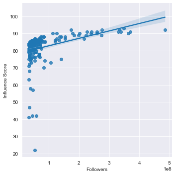
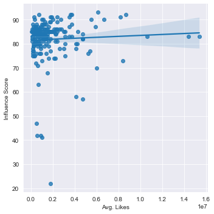
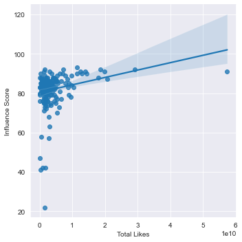
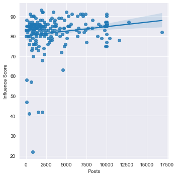

In recent years, being a social media influencer has become a more popular "job" choice. Whether it be through Instagram, Tiktok or some other platform, people want to know what makes an influencer more popular. Well, I have found data about Instagram Influencers on Kaggle and I have done an analysis in order to answer that question. I have seperated the previous question into four seperate questions in order to better determine what affects an influencers popularity. These four questions determine if there is a statistically significant correlation between an influencers score and their amount of followers, their average likes, their total likes or their amount of posts.



